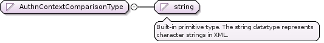

Main schema saml-schema-protocol-2.0.xsd
Element samlp:Extensions
Namespace urn:oasis:names:tc:SAML:2.0:protocol
Diagram
Type samlp:ExtensionsType
Properties
Used by
Complex Types
samlp:ArtifactResolveType samlp:ArtifactResponseType samlp:AssertionIDRequestType samlp:AttributeQueryType samlp:AuthnQueryType samlp:AuthnRequestType samlp:AuthzDecisionQueryType samlp:LogoutRequestType samlp:ManageNameIDRequestType samlp:NameIDMappingRequestType samlp:NameIDMappingResponseType samlp:RequestAbstractType samlp:ResponseType samlp:StatusResponseType samlp:SubjectQueryAbstractType
Model
ANY element from ANY namespace OTHER than 'urn:oasis:names:tc:SAML:2.0:protocol'
Source
<element name= "Extensions" type= "samlp:ExtensionsType" />
Element samlp:Status
Element samlp:StatusCode
Element samlp:StatusMessage
Element samlp:StatusDetail
Element samlp:AssertionIDRequest
Element samlp:SubjectQuery
Element samlp:AuthnQuery
Element samlp:RequestedAuthnContext
Element samlp:AttributeQuery
Element samlp:AuthzDecisionQuery
Namespace urn:oasis:names:tc:SAML:2.0:protocol
Diagram
Type samlp:AuthzDecisionQueryType
Type hierarchy
Properties
Model
Children Action , Evidence , Issuer , Subject , ds:Signature samlp:Extensions
Instance
<samlp:AuthzDecisionQuery Consent= "" Destination= "" ID= "" IssueInstant= "" Resource= "" Version= "" xmlns:samlp= "urn:oasis:names:tc:SAML:2.0:protocol" xmlns:ds= "http://www.w3.org/2000/09/xmldsig#" >
<Issuer > {0,1} </Issuer>
<ds:Signature Id= "" > {0,1} </ds:Signature>
<samlp:Extensions > {0,1} </samlp:Extensions>
<Subject > {1,1} </Subject>
<Action > {1,unbounded} </Action>
<Evidence > {0,1} </Evidence>
</samlp:AuthzDecisionQuery>
Attributes
Source
<element name= "AuthzDecisionQuery" type= "samlp:AuthzDecisionQueryType" />
Element samlp:AuthnRequest
Namespace urn:oasis:names:tc:SAML:2.0:protocol
Diagram
Type samlp:AuthnRequestType
Type hierarchy
Properties
Model
Issuer{0,1} ,
ds:Signature{0,1} ,
samlp:Extensions{0,1} ,
Subject{0,1} ,
samlp:NameIDPolicy{0,1} ,
Conditions{0,1} ,
samlp:RequestedAuthnContext{0,1} ,
samlp:Scoping{0,1}
Children Conditions , Issuer , Subject , ds:Signature samlp:Extensions samlp:NameIDPolicy samlp:RequestedAuthnContext samlp:Scoping
Instance
<samlp:AuthnRequest AssertionConsumerServiceIndex= "" AssertionConsumerServiceURL= "" AttributeConsumingServiceIndex= "" Consent= "" Destination= "" ForceAuthn= "" ID= "" IsPassive= "" IssueInstant= "" ProtocolBinding= "" ProviderName= "" Version= "" xmlns:samlp= "urn:oasis:names:tc:SAML:2.0:protocol" xmlns:ds= "http://www.w3.org/2000/09/xmldsig#" >
<Issuer > {0,1} </Issuer>
<ds:Signature Id= "" > {0,1} </ds:Signature>
<samlp:Extensions > {0,1} </samlp:Extensions>
<Subject > {0,1} </Subject>
<samlp:NameIDPolicy AllowCreate= "" Format= "" SPNameQualifier= "" > {0,1} </samlp:NameIDPolicy>
<Conditions > {0,1} </Conditions>
<samlp:RequestedAuthnContext Comparison= "" > {0,1} </samlp:RequestedAuthnContext>
<samlp:Scoping ProxyCount= "" > {0,1} </samlp:Scoping>
</samlp:AuthnRequest>
Attributes
Source
<element name= "AuthnRequest" type= "samlp:AuthnRequestType" />
Element samlp:NameIDPolicy
Element samlp:Scoping
Element samlp:IDPList
Element samlp:IDPEntry
Element samlp:GetComplete
Element samlp:RequesterID
Element samlp:Response
Namespace urn:oasis:names:tc:SAML:2.0:protocol
Diagram
Type samlp:ResponseType
Type hierarchy
Properties
Model
Children Assertion , EncryptedAssertion , Issuer , ds:Signature samlp:Extensions samlp:Status
Instance
<samlp:Response Consent= "" Destination= "" ID= "" InResponseTo= "" IssueInstant= "" Version= "" xmlns:samlp= "urn:oasis:names:tc:SAML:2.0:protocol" xmlns:ds= "http://www.w3.org/2000/09/xmldsig#" >
<Issuer > {0,1} </Issuer>
<ds:Signature Id= "" > {0,1} </ds:Signature>
<samlp:Extensions > {0,1} </samlp:Extensions>
<samlp:Status > {1,1} </samlp:Status>
<Assertion > {1,1} </Assertion>
<EncryptedAssertion > {1,1} </EncryptedAssertion>
</samlp:Response>
Attributes
Source
<element name= "Response" type= "samlp:ResponseType" />
Element samlp:ArtifactResolve
Element samlp:Artifact
Element samlp:ArtifactResponse
Element samlp:ManageNameIDRequest
Namespace urn:oasis:names:tc:SAML:2.0:protocol
Diagram
Type samlp:ManageNameIDRequestType
Type hierarchy
Properties
Model
Children EncryptedID , Issuer , NameID , ds:Signature samlp:Extensions samlp:NewEncryptedID samlp:NewID samlp:Terminate
Instance
<samlp:ManageNameIDRequest Consent= "" Destination= "" ID= "" IssueInstant= "" Version= "" xmlns:samlp= "urn:oasis:names:tc:SAML:2.0:protocol" xmlns:ds= "http://www.w3.org/2000/09/xmldsig#" >
<Issuer > {0,1} </Issuer>
<ds:Signature Id= "" > {0,1} </ds:Signature>
<samlp:Extensions > {0,1} </samlp:Extensions>
<NameID > {1,1} </NameID>
<EncryptedID > {1,1} </EncryptedID>
<samlp:NewID > {1,1} </samlp:NewID>
<samlp:NewEncryptedID > {1,1} </samlp:NewEncryptedID>
<samlp:Terminate > {1,1} </samlp:Terminate>
</samlp:ManageNameIDRequest>
Attributes
Source
<element name= "ManageNameIDRequest" type= "samlp:ManageNameIDRequestType" />
Element samlp:NewID
Element samlp:NewEncryptedID
Element samlp:Terminate
Element samlp:ManageNameIDResponse
Element samlp:LogoutRequest
Namespace urn:oasis:names:tc:SAML:2.0:protocol
Diagram
Type samlp:LogoutRequestType
Type hierarchy
Properties
Model
Children BaseID , EncryptedID , Issuer , NameID , ds:Signature samlp:Extensions samlp:SessionIndex
Instance
<samlp:LogoutRequest Consent= "" Destination= "" ID= "" IssueInstant= "" NotOnOrAfter= "" Reason= "" Version= "" xmlns:samlp= "urn:oasis:names:tc:SAML:2.0:protocol" xmlns:ds= "http://www.w3.org/2000/09/xmldsig#" >
<Issuer > {0,1} </Issuer>
<ds:Signature Id= "" > {0,1} </ds:Signature>
<samlp:Extensions > {0,1} </samlp:Extensions>
<BaseID > {1,1} </BaseID>
<NameID > {1,1} </NameID>
<EncryptedID > {1,1} </EncryptedID>
<samlp:SessionIndex > {0,unbounded} </samlp:SessionIndex>
</samlp:LogoutRequest>
Attributes
Source
<element name= "LogoutRequest" type= "samlp:LogoutRequestType" />
Element samlp:SessionIndex
Element samlp:LogoutResponse
Element samlp:NameIDMappingRequest
Namespace urn:oasis:names:tc:SAML:2.0:protocol
Diagram
Type samlp:NameIDMappingRequestType
Type hierarchy
Properties
Model
Children BaseID , EncryptedID , Issuer , NameID , ds:Signature samlp:Extensions samlp:NameIDPolicy
Instance
<samlp:NameIDMappingRequest Consent= "" Destination= "" ID= "" IssueInstant= "" Version= "" xmlns:samlp= "urn:oasis:names:tc:SAML:2.0:protocol" xmlns:ds= "http://www.w3.org/2000/09/xmldsig#" >
<Issuer > {0,1} </Issuer>
<ds:Signature Id= "" > {0,1} </ds:Signature>
<samlp:Extensions > {0,1} </samlp:Extensions>
<BaseID > {1,1} </BaseID>
<NameID > {1,1} </NameID>
<EncryptedID > {1,1} </EncryptedID>
<samlp:NameIDPolicy AllowCreate= "" Format= "" SPNameQualifier= "" > {1,1} </samlp:NameIDPolicy>
</samlp:NameIDMappingRequest>
Attributes
Source
<element name= "NameIDMappingRequest" type= "samlp:NameIDMappingRequestType" />
Element samlp:NameIDMappingResponse
Namespace urn:oasis:names:tc:SAML:2.0:protocol
Diagram
Type samlp:NameIDMappingResponseType
Type hierarchy
Properties
Model
Children EncryptedID , Issuer , NameID , ds:Signature samlp:Extensions samlp:Status
Instance
<samlp:NameIDMappingResponse Consent= "" Destination= "" ID= "" InResponseTo= "" IssueInstant= "" Version= "" xmlns:samlp= "urn:oasis:names:tc:SAML:2.0:protocol" xmlns:ds= "http://www.w3.org/2000/09/xmldsig#" >
<Issuer > {0,1} </Issuer>
<ds:Signature Id= "" > {0,1} </ds:Signature>
<samlp:Extensions > {0,1} </samlp:Extensions>
<samlp:Status > {1,1} </samlp:Status>
<NameID > {1,1} </NameID>
<EncryptedID > {1,1} </EncryptedID>
</samlp:NameIDMappingResponse>
Attributes
Source
<element name= "NameIDMappingResponse" type= "samlp:NameIDMappingResponseType" />
Complex Type samlp:RequestAbstractType
Complex Type samlp:ExtensionsType
Complex Type samlp:StatusResponseType
Complex Type samlp:StatusType
Complex Type samlp:StatusCodeType
Complex Type samlp:StatusDetailType
Complex Type samlp:AssertionIDRequestType
Complex Type samlp:SubjectQueryAbstractType
Complex Type samlp:AuthnQueryType
Complex Type samlp:RequestedAuthnContextType
Simple Type samlp:AuthnContextComparisonType
Namespace urn:oasis:names:tc:SAML:2.0:protocol
Diagram

Type restriction of string
Facets
enumeration
exact
enumeration
minimum
enumeration
maximum
enumeration
better
Used by
Source
<simpleType name= "AuthnContextComparisonType" >
<restriction base= "string" >
<enumeration value= "exact" />
<enumeration value= "minimum" />
<enumeration value= "maximum" />
<enumeration value= "better" />
</restriction>
</simpleType>
Complex Type samlp:AttributeQueryType
Complex Type samlp:AuthzDecisionQueryType
Complex Type samlp:AuthnRequestType
Namespace urn:oasis:names:tc:SAML:2.0:protocol
Diagram
Type extension of samlp:RequestAbstractType
Type hierarchy
Used by
Model
Issuer{0,1} ,
ds:Signature{0,1} ,
samlp:Extensions{0,1} ,
Subject{0,1} ,
samlp:NameIDPolicy{0,1} ,
Conditions{0,1} ,
samlp:RequestedAuthnContext{0,1} ,
samlp:Scoping{0,1}
Children Conditions , Issuer , Subject , ds:Signature samlp:Extensions samlp:NameIDPolicy samlp:RequestedAuthnContext samlp:Scoping
Attributes
Source
<complexType name= "AuthnRequestType" >
<complexContent >
<extension base= "samlp:RequestAbstractType" >
<sequence >
<element ref= "saml:Subject" minOccurs= "0" />
<element ref= "samlp:NameIDPolicy" minOccurs= "0" />
<element ref= "saml:Conditions" minOccurs= "0" />
<element ref= "samlp:RequestedAuthnContext" minOccurs= "0" />
<element ref= "samlp:Scoping" minOccurs= "0" />
</sequence>
<attribute name= "ForceAuthn" type= "boolean" use= "optional" />
<attribute name= "IsPassive" type= "boolean" use= "optional" />
<attribute name= "ProtocolBinding" type= "anyURI" use= "optional" />
<attribute name= "AssertionConsumerServiceIndex" type= "unsignedShort" use= "optional" />
<attribute name= "AssertionConsumerServiceURL" type= "anyURI" use= "optional" />
<attribute name= "AttributeConsumingServiceIndex" type= "unsignedShort" use= "optional" />
<attribute name= "ProviderName" type= "string" use= "optional" />
</extension>
</complexContent>
</complexType>
Complex Type samlp:NameIDPolicyType
Complex Type samlp:ScopingType
Complex Type samlp:IDPListType
Complex Type samlp:IDPEntryType
Complex Type samlp:ResponseType
Complex Type samlp:ArtifactResolveType
Complex Type samlp:ArtifactResponseType
Complex Type samlp:ManageNameIDRequestType
Complex Type samlp:TerminateType
Complex Type samlp:LogoutRequestType
Complex Type samlp:NameIDMappingRequestType
Complex Type samlp:NameIDMappingResponseType
Namespace No namespace
Type samlp:AuthnContextComparisonType
Properties
Facets
enumeration
exact
enumeration
minimum
enumeration
maximum
enumeration
better
Used by
Source
<attribute name= "Comparison" type= "samlp:AuthnContextComparisonType" use= "optional" />